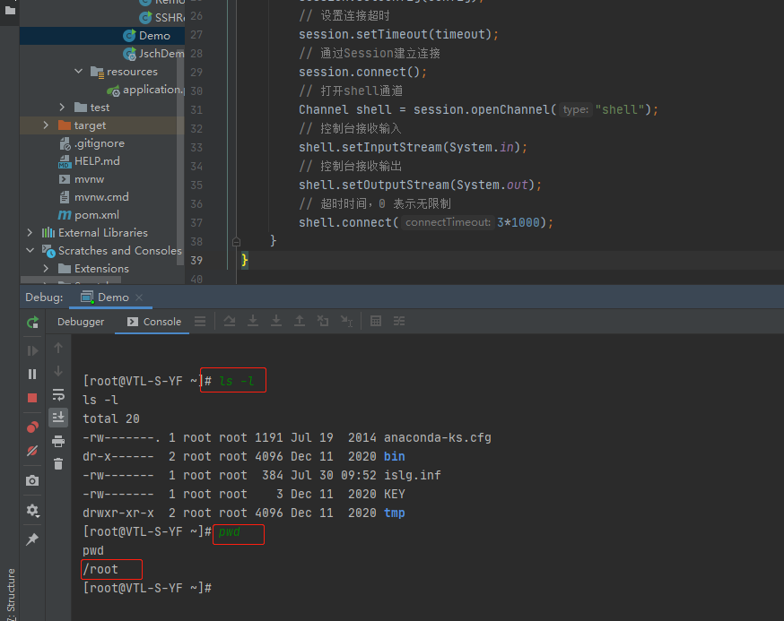
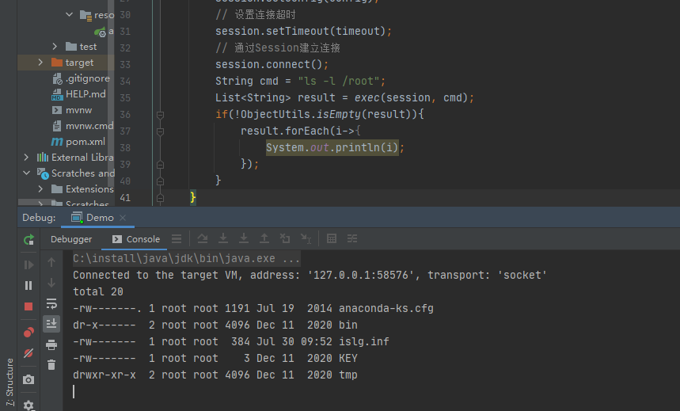
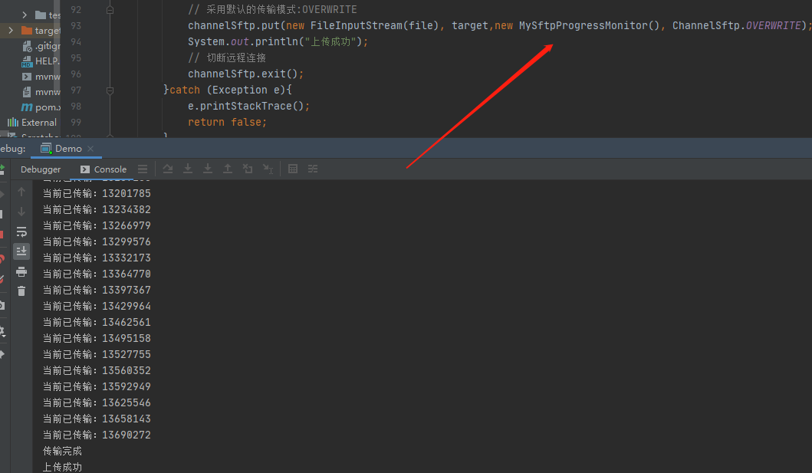

一、Java-SSH连接执行远程服务命令
一、前言
- 刚好，项目需要调用远程服务器的命令，所以研究一波
- 目前，Java执行远程命令的第三方包常用的有：jsch、ganymed-ssh2、
- 本文的例子是 jsch
二、导入依赖
- 导入jsch的依赖，最近的更新时间是2018年：
0.1.55版本 - 可能是因为Java 执行第三方的需求比较少吧，所以市面上可使用的Jar很少
<dependency> |
- 访问官方文档例子：http://www.jcraft.com/jsch/examples/
三、快速开始
- 简单例子来一波
1、shell登录
- 可直接通过Java控制台与远程服务器shell命令交互
- 简单代码如下：
public class Demo { |
- 执行，不出问题即可看到控制台已连接到服务端了，执行linux命令了

- 如上是控制台交互的，如果要直接执行命令，java接收呢？如下
2、执行远程Linux命令
- 和上面一样，也是创建一个session，然后通过session,打开一个命令通道即可。
- 例子如下：
public class Demo { |
- session的获取和第一个一样，也就是说，后期可以做封装方便调用
- 使用：
session.openChannel("exec")打开一个命令通道，然后接收命令返回即可 - 结果如下图：

3、文件上传下载
- 除了调用命令，文件的上传下载也是常用的功能
- jsch 里面的ChannelSftp实现了SFTP核心类，它包含了所有SFTP的方法，如：
put()：文件上传get()：文件下载cd()：进入指定目录ls()：得到指定目录下的文件列表rename()：重命名指定文件或目录rm()：删除指定文件mkdir()：创建目录rmdir()：删除目录
等等（这里省略了方法的参数，put和get都有多个重载方法，具体请看源代码：com.jcraft.jsch.ChannelSftp
Jsch支持三种文件传输模式：
// 完全覆盖模式，这是JSch的默认文件传输模式，即如果目标文件已经存在，传输的文件将完全覆盖目标文件，产生新的文件 |
①、文件上传
- 使用的是
put()方法，所有重载方法，最终都会调用的方法如下：
public void put(String src, String dst,SftpProgressMonitor monitor, int mode) throws SftpException{ |
- 参数解释：
- 第一个参数：src，将本地文件名为src的文件上传到目标服务器
- 第二个参数：dst,目标文件名为dst，若dst为目录，则目标文件名将与src文件名相同
- 第三个参数：monitor，monitor对象来监控文件传输的进度。
- 第四个参数：mode,文件的传输方式，采用默认的传输模式：
OVERWRITE
还是之前的Demo,如下：
public class Demo { |
- 上面的例子是没有监控文件的上传进度，那如果要使用怎么办，如下
- 实现
SftpProgressMonitor接口，重写其方法即可，代码里面有注释
/** |
- 比较粗略，可以自己实现符合业务需求的结果如下：

②、文件下载
- 其实文件下载和文件上传类似，如下
public static boolean download(Session session,String src,String target){ |
- 方法和文件上传一样，只是参数刚好交换而已
public static void main(String[] args) throws JSchException { |
- 如果是网页下载的话，直接传一个
response.getOutputStream()过去就可以了,如下：
public static boolean download(Session session,String src,OutputStream out){ |
4、跳板机
- 可以通过Session的
setPortForwardingL()方法进行转发，但是我这边运行失败 - 不知道是不是需要在linux执行才能成功，我是windows IDEA运行的，以后再研究一下。代码如下：
public static void main(String[] args) throws Throwable { |
- 代码很简单，不知道哪里出问题了，
setPortForwardingL()的bind_address参数 - 能设置的都设置了，还是报错。服务器的防火墙什么的都关了。都能相互ping通。